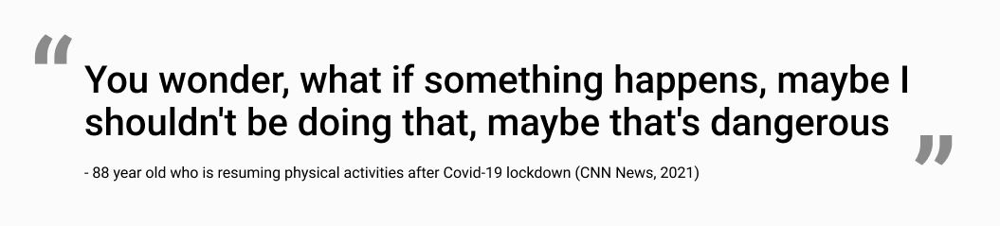
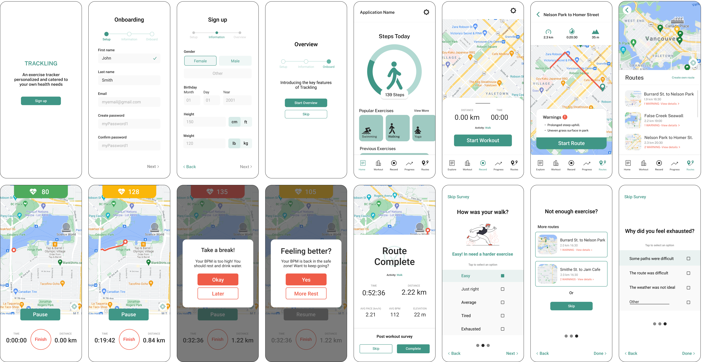

Trackling
Helping seniors understand their physical capabilities through a health tracking application
Context
Academic
8 weeks
Tools
Figma
Miro
Contributions
- Conducted user research and competitive analysis
- Led and interviewed 6 seniors
- Created user interface design for signup and surveys
- Lead the design direction and managed the team
Overview
Problem Identification
Many seniors regularly engage in physical activities to prevent or delay health problems that come with age. However, many do so independently, resulting in severe injuries.
Problem
Many seniors (age 75 and above) lack physical awareness and push themselves too hard, causing unexpected injuries or falls.
Solution
skip to solutionTrackling, a senior focused fitness support app that provides personalized workouts, notifications,and visualized progress tracking.
Research
Inspiration
Many of our family and friends faced difficulty maintaining physical exercise during the pandemic. We wondered if seniors also encountered similiar struggles.
Research domain: Mobility and Movement amongst Seniors
Affinity Map
Goal: Determine a problem area
With our research on Mobility and Movement, we compiled all our data on Miro to observe the different topics within our domain.
Using Nielsen Norman's severity rating, our group narrowed down to focus on physical awarness because we had stronger supporting evidence from interviews and primary sources.

With a defined topic area, we created two 'How Might We' to guide us through further research.
Design Space
How might we help seniors stay within their physical limits and set realistic expectations?
How might we cater the appropriate exercises for seniors to feel confident?
Competitive Analysis
Goal: Discover how exisiting applications help users understand and stay within their physical limits.
My FitnessPal
Best for logging personal progress and providing qualitative data - tracking changes and providing numbers to achieve user goals.

Strava
Users can sync different tracking devices and are informed of surface condition that can be important to user with mobility difficulties.

MapMyWalk
The application provides heart rate analysis and audio coaching.
Key Observations
Existing solutions focus more on progress tracking rather than helping users understand the level/intensity of exercise is within their limits.
Unlike younger athletes who focus on performance based goals, seniors are different in that they prioritize capability and safety
Design Considerations
Ideas
After observing existing applications and their features, each of our team members brainstormed two new ideas that can help solve the user's problem.
#1 Ability to connect with existing health monitor applications
#2 Specific health and exercise related questions post workout
#3 Logging workout via BPM (Beats per minute) with difference colours
#4 Notify users to rest when their heart rate increases pass a safe zone
Accessible Design
01
Increased font size


02
High contrast colours


03
Simplified Language


Usability Heuristics
A strong user interface also accounts for the micro interactions, such as the importance of helping users ability to recognize, diagnose, and recover from errors, especially for seniors.
Asn example is adding a red border over unselected buttons or incomplete fields with an error message below during the Sign-up process.
First Draft
User Testing
Through four users tests with seniors from ages 50-70, we learned that...
Seniors pay more attention to content and instructions rather than the visual cues
For our final designs, we ensured that language and instructions were clear, yet enough to maintain a simple-to-read interface.
Solution Breakdown
Application
Trackling is a fitness support app that utilizes user’s health data to provide users with personalized workouts, notifications and visualized progress tracking.
Problem Brief
Many seniors (age 75 and above) lack physical awareness and push themselves too hard, causing unexpected injuries or falls
Accessibility Considerations
We want to create an accessible application suitable for seniors. The design considerations include high contrast colour combinations, larger standard font, and formal language understood by the user.
Final Mockup
Onboarding


Health Application Data Sync
After installing, the user can input their information by syncing their health data from other applications or devices to create a seamless and personalized experience.
Navigation


Activity Routes
In the workouts page, the user is given the option of choosing a walking route within their vicinity or building her own route.
Each option provides them with the distance, estimated time, elevation gain, as well as cautions that they might need to consider such as gravel or uneven surfaces.
Workout Recorder

Real-Time Health Report
On the walk, the user is provided with real-time notifications that is dependent of her 'zone'.
If they enter the yellow zone, the system will send a notification. In the red zone, the notification will include audio and haptic alerts to notify the user to take a break until their BPM reaches a safe zone.
Utilizing traffic light colours not only help stand out from their surroundings but also are recognizable to seniors as they are incorporated in our daily life.
Post Workout


Activity Survey
After a workout, Trackling prompts a simply and quick post workout survey to understand the user's emotional and physical state for better catered recommended workouts.
Value
Impact
Helping seniors create a more personalized experience by helping them stay within their physical limits.
The app notifies users when they are exceeding their physical limits based on the safe thresholds of their active heart rate in beats per minute (BPM) and age group, for low, moderate, and high intensity activities. In addition, appropriate exercises are suggested based on their physical and health conditions.
Success Measures
- Increase of accessibility score on user interface and experience
- Task success rate on user's ability to complete a guided workout and survey
- User error rate to identify the number of times a user makes a mistake while navigating through the app
Next Steps
Areas we are interested in tracking the engagement levels of:
Onboarding
Existing application syncing versus data entered manually
Workout Recorder
User taking a break versus selecting 'later' and neglecting the notification
Post Workout
Users who complete the survey versus those who skip
Reflection
Leading the team
I first took on a leadership role for this project and led the direction of of the design process, then later overlooked the whole project while focusing on my individual tasks. From this experience, I learned that as a leader it is important to learn about everyone's skills and leverage their strengths during work deligation or collaboration.
Usability Constraints
After the completing the project, I wondered if the features on the application are feasible while a user is active and exercising. I learned that designing for an older audience requires detailed attention towards accessibility and considerations beyond the digital solution.
Dynamic Design Process
Feedback is key to growth as a designer. I learned that it is important to ask for critique or feedback throughout the whole process whether it may be big or small.